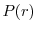
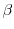

Next:
Key for command descriptions
Up:
MODELLER A Program for
Previous:
Symmetry restraints
Contents
Index
M
ODELLER
command reference
Subsections
Key for command descriptions
The
environ
class: M
ODELLER
environment
environ() -- create a new M
ODELLER
environment
environ.io -- default input parameters
environ.edat -- default objective function parameters
environ.libs -- M
ODELLER
libraries
environ.schedule_scale -- energy function scaling factors
environ.dendrogram() -- clustering
environ.principal_components() -- clustering
environ.system() -- execute system command
environ.make_pssmdb() -- Create a database of PSSMs given a list of profiles
The
energy_data
class: objective function parameters
energy_data() -- create a new set of objective function parameters
energy_data.contact_shell -- nonbond distance cutoff
energy_data.update_dynamic -- nonbond recalculation threshold
energy_data.sphere_stdv -- soft-sphere standard deviation
energy_data.dynamic_sphere -- calculate soft-sphere overlap restraints
energy_data.dynamic_lennard -- calculate Lennard-Jones restraints
energy_data.dynamic_coulomb -- calculate Coulomb restraints
energy_data.dynamic_modeller -- calculate non-bonded spline restraints
energy_data.excl_local -- exclude certain local pairs of atoms
energy_data.radii_factor -- scale atomic radii
energy_data.lennard_jones_switch -- Lennard-Jones switching parameters
energy_data.coulomb_switch -- Coulomb switching parameters
energy_data.relative_dielectric -- relative dielectric
energy_data.covalent_cys -- use disulfide bridges in residue distance
energy_data.nonbonded_sel_atoms -- control interaction with picked atoms
energy_data.nlogn_use -- select non-bond list generation algorithm
energy_data.energy_terms -- user-defined global energy terms
The
io_data
class: coordinate file input parameters
io_data() -- create a new input parameters object
io_data.hetatm -- whether to read HETATM records
io_data.hydrogen -- whether to read hydrogen atoms
io_data.water -- whether to read water molecules
io_data.atom_files_directory -- search path for coordinate files
The
Libraries
class: stereochemical parameters and molecular topology
Libraries.topology -- topology library information
Libraries.parameters -- parameter library information
Topology.append() -- append residue topology library
Topology.clear() -- clear residue topology library
Topology.read() -- read residue topology library
Parameters.append() -- append parameters library
Parameters.clear() -- clear parameters library
Parameters.read() -- read parameters library
Topology.make() -- make a subset topology library
Topology.submodel -- select topology model type
Topology.write() -- write residue topology library
The
model
class: handling of atomic coordinates, and model building
model() -- create a new 3D model
model.seq_id -- sequence identity between the model and templates
model.resolution -- resolution of protein structure
model.last_energy -- last objective function value
model.remark -- text remark(s)
model.restraints -- all static restraints which act on the model
model.group_restraints -- all restraints which act on atom groups
model.atoms -- all atoms in the model
model.point() -- return a point in Cartesian space
model.atom_range() -- return a subset of all atoms
model.residue_range() -- return a subset of all residues
model.get_insertions() -- return a list of all insertions
model.get_deletions() -- return a list of all deletions
model.loops() -- return a list of all loops
model.read() -- read coordinates for MODEL
model.build_sequence() -- build model from a sequence of one-letter codes
model.write() -- write MODEL
model.clear_topology() -- clear model topology
model.generate_topology() -- generate MODEL topology
model.write_psf() -- write molecular topology to PSF file
model.patch() -- patch MODEL topology
model.patch_ss_templates() -- guess MODEL disulfides from templates
model.patch_ss() -- guess MODEL disulfides from model structure
model.build() -- build MODEL coordinates from topology
model.transfer_xyz() -- copy templates' coordinates to MODEL
model.res_num_from() -- residue numbers from MODEL2 to MODEL
model.rename_segments() -- rename MODEL segments
model.to_iupac() -- standardize certain dihedral angles
model.reorder_atoms() -- standardize order of MODEL atoms
model.orient() -- center and orient MODEL
model.write_data() -- write derivative model data
model.make_region() -- define a random surface patch of atoms
model.color() -- color MODEL according to alignment
model.make_chains() -- Fetch sequences from PDB file
model.saxs_intens() -- Calculate SAXS intensity from model
model.saxs_pr() -- Calculate  of model
model.saxs_chifun() -- Calculate SAXS score chi from model
model.assess_ga341() -- assess a model with the GA341 method
model.assess_normalized_dope() -- assess a model with the normalized DOPE method
The
Restraints
class: static restraints
Restraints.rigid_bodies -- all rigid bodies
Restraints.pseudo_atoms -- all pseudo atoms
Restraints.excluded_pairs -- all excluded pairs
Restraints.nonbonded_pairs -- all nonbonded pairs
Restraints.symmetry -- all symmetry restraints
Restraints.symmetry.report() -- report violated symmetry restraints
Restraints.make() -- make restraints
Restraints.make_distance() -- make distance restraints
Restraints.unpick_all() -- unselect all restraints
Restraints.clear() -- delete all restraints
Restraints.pick() -- pick restraints for selected atoms
Restraints.unpick_redundant() -- unselect redundant restraints
Restraints.remove_unpicked() -- remove unselected restraints
Restraints.condense() -- remove unselected or redundant restraints
Restraints.add() -- add restraint
Restraints.unpick() -- unselect restraints
Restraints.reindex() -- renumber model restraints using another model
Restraints.spline() -- approximate restraints by splines
Restraints.append() -- read spatial restraints
Restraints.write() -- write spatial restraints
The
secondary_structure
module: secondary structure restraints
alpha() -- make an
-helix
strand() -- make a  -strand
sheet() -- make a -sheet
The
selection
class: handling of sets of atom coordinates
selection() -- create a new selection
selection.add() -- add objects to selection
selection.extend_by_residue() -- extend selection by residue
selection.by_residue() -- make sure all residues are fully selected
selection.select_sphere() -- select all atoms within radius
selection.only_mainchain() -- select only mainchain atoms
selection.only_sidechain() -- select only sidechain atoms
selection.only_atom_types() -- select only atoms of given types
selection.only_residue_types() -- select only atoms of given residue type
selection.only_std_residues() -- select only standard residues
selection.only_no_topology() -- select only residues without topology
selection.only_het_residues() -- select only HETATM residues
selection.only_water_residues() -- select only water residues
selection.only_defined() -- select only atoms with defined coordinates
selection.write() -- write selection coordinates to a file
selection.translate() -- translate all coordinates
selection.rotate_origin() -- rotate coordinates about origin
selection.rotate_mass_center() -- rotate coordinates about mass center
selection.transform() -- transform coordinates with a matrix
selection.mutate() -- mutate selected residues
selection.randomize_xyz() -- randomize selected coordinates
selection.superpose() -- superpose model on selection given alignment
selection.rotate_dihedrals() -- change dihedral angles
selection.unbuild() -- undefine coordinates
selection.hot_atoms() -- atoms violating restraints
selection.energy() -- evaluate atom selection given restraints
selection.debug_function() -- test code self-consistency
selection.assess_dope() -- assess a model selection with the DOPE method
selection.assess_dopehr() -- assess a model with the DOPE-HR method
The
physical
module: contributions to the objective function
physical.values() -- create a new set of physical values
The
optimizers
module: optimization of the model
conjugate_gradients() -- optimize atoms given restraints, with CG
quasi_newton() -- optimize atoms with quasi-Newton minimization
molecular_dynamics() -- optimize atoms given restraints, with MD
actions.write_structure() -- write out the model coordinates
actions.trace() -- write out optimization energies,
etc
actions.charmm_trajectory() -- write out a CHARMM trajectory
User-defined optimizers
The
schedule
class: variable target function optimization
schedule() -- create a new schedule
schedule.make_for_model() -- trim a schedule for a model
schedule.write() -- write optimization schedule
The
group_restraints
class: restraints on atom groups
group_restraints() -- create a new set of group restraints
group_restraints.append() -- read group restraint parameters
The
gbsa
module: implicit solvation
gbsa.Scorer() -- create a new scorer to evaluate GB/SA energies
The
alignment
class: comparison of sequences and structures
alignment() -- create a new alignment
alignment.comments -- alignment file comments
alignment.append() -- read sequences and/or their alignment
alignment.clear() -- delete all sequences from the alignment
alignment.read_one() -- read sequences one by one from a file
alignment.check_structure_structure() -- check template structure superpositions
alignment.check_sequence_structure() -- check sequence/structure alignment for sanity
alignment.check() -- check alignment for modeling
alignment.compare_with() -- compare two alignments
alignment.append_model() -- copy model sequence and coordinates to alignment
alignment.append_sequence() -- add a sequence from one-letter codes
alignment.append_profile() -- add profile sequences to the alignment
alignment.write() -- write sequences and/or their alignment
alignment.edit() -- edit overhangs in alignment
alignment.describe() -- describe proteins
alignment.id_table() -- calculate percentage sequence identities
alignment.compare_sequences() -- compare sequences in alignment
alignment.align() -- align two (blocks of) sequences
alignment.align2d() -- align sequences with structures
alignment.malign() -- align two or more sequences
alignment.consensus() -- consensus sequence alignment
alignment.compare_structures() -- compare 3D structures given alignment
alignment.align3d() -- align two structures
alignment.malign3d() -- align two or more structures
alignment.salign() -- align two or more sequences/structures of proteins
Features of proteins used for alignment
Alignment of protein sequences
Alignment of protein structures with sequences
Alignment of protein structures
Sub-optimal alignments
Alignments using external restraints
Gap penalties and correcting for gaps
Useful SALIGN information and commands
alignment.get_suboptimals() -- parse suboptimal alignments file
alignment.to_profile() -- convert alignment to profile format
alignment.segment_matching() -- align segments
The
Sequence
class: a single sequence within an alignment
Sequence.range -- residue range
Sequence.code -- alignment code
Sequence.atom_file -- PDB file name
Sequence.source -- source organism
Sequence.name -- protein name
Sequence.prottyp -- protein sequence type
Sequence.resolution -- structure resolution
Sequence.rfactor -- R factor
Sequence.residues -- list of all residues in the sequence
Sequence.chains -- list of all chains in the sequence
Sequence.transfer_res_prop() -- transfer residue properties
Sequence.get_num_equiv() -- get number of equivalences
Sequence.get_sequence_identity() -- get sequence identity
The
Structure
class: a template structure within an alignment
Structure.write() -- write out PDB file
Structure.reread() -- reread coordinates from atom file
The
Chain
class: a single chain in a model or alignment
Chain.name -- chain ID
Chain.residues -- all residues in the chain
Chain.atoms -- all atoms in the chain
Chain.filter() -- check if this chain passes all criteria
Chain.write() -- write out chain sequence to an alignment file
Chain.atom_file_and_code() -- get suitable names for this chain
Chain.join() -- join other chain(s) onto this one
The
Residue
class: a single residue in a model or alignment
Residue.name -- internal (CHARMM) residue type name
Residue.pdb_name -- PDB (IUPAC) type name
Residue.code -- One-letter residue type code
Residue.hetatm -- HETATM indicator
Residue.index -- internal integer index
Residue.num -- PDB-style residue number
Residue.curvature -- Mainchain curvature
Residue.atoms -- all atoms in the residue
Residue.chain -- chain object
Residue.phi --
dihedral angle
Residue.psi --
dihedral angle
Residue.omega -- dihedral angle
Residue.alpha --
dihedral angle
Residue.chi1 --
dihedral angle
Residue.chi2 --
dihedral angle
Residue.chi3 --
dihedral angle
Residue.chi4 --
dihedral angle
Residue.chi5 --
dihedral angle
Residue.get_aligned_residue() -- get aligned residue in another sequence
Residue.add_leading_gaps() -- add gap(s) before this residue
Residue.add_trailing_gaps() -- add gap(s) after this residue
Residue.remove_leading_gaps() -- remove gap(s) before this residue
Residue.remove_trailing_gaps() -- remove gap(s) after this residue
Residue.get_leading_gaps() -- get number of gaps before this residue
Residue.get_trailing_gaps() -- get number of gaps after this residue
The
Dihedral
class: a single dihedral in a model or alignment
Dihedral.value -- current value in degrees
Dihedral.atoms -- atoms defining the angle
Dihedral.dihclass -- integer dihedral class
The
Point
class: a point in Cartesian space
Point.x -- x coordinate
Point.select_sphere() -- select all atoms within radius
The
Atom
class: a single atom in a model or structure
Atom.dvx -- objective function derivative
Atom.vx -- x component of velocity
Atom.biso -- isotropic temperature factor
Atom.occ -- occupancy
Atom.charge -- electrostatic charge
Atom.mass -- mass
Atom.name -- PDB name
Atom.element -- Element symbol
Atom.residue -- residue object
The
profile
class: using sequence profiles
profile() -- create a new profile
profile.read() -- read a profile of a sequence
profile.write() -- write a profile
profile.to_alignment() -- profile to alignment
profile.scan() -- Compare a target profile against a database of profiles
profile.build() -- Build a profile for a given sequence or alignment
pssmdb() -- create a new PSSM database
pssmdb.read() -- read a PSSM database from a file
The
sequence_db
class: using sequence databases
sequence_db() -- create a new sequence database
sequence_db.read() -- read a database of sequences
sequence_db.write() -- write a database of sequences
sequence_db.convert() -- convert a database to binary format
sequence_db.search() -- search for similar sequences
sequence_db.filter() -- cluster sequences by sequence-identity
The
density
class: handling electron microscopy density data
density() -- create a new density map
density.read() -- read an EM (electron microscopy) density map file
density.grid_search() -- dock a structure into an EM (electron microscopy) density map
The
saxsdata
class: using small-angle X-ray (SAXS) data
saxsdata() -- create a new saxsdata structure
saxsdata.ini_saxs() -- Initialization of SAXS data
saxsdata.saxs_read() -- Read in SAXS data
saxsdata.saxs_pr_read() -- Read in P(r) data
The
info
object: obtaining information about the M
ODELLER
build
info.version -- the full M
ODELLER
version number
info.version_info -- the version number, as a tuple
info.build_date -- the date this binary was built
info.exe_type -- the executable type of this binary
info.debug -- this binary's debug flag
info.bindir -- M
ODELLER
binary directory
info.time_mark() -- print current date, time, and CPU time
info.jobname -- name of the current job
The
log
object: controlling the amount of output
log.level() -- Set all log output levels
log.none() -- display no log output
log.minimal() -- display minimal log output
log.verbose() -- display verbose log output
log.very_verbose() -- display verbose log output, and dynamic memory information
The
modfile
module: handling of files
modfile.default() -- generate an `automatic' filename
modfile.delete() -- delete a file
modfile.inquire() -- check if file exists
modfile.File() -- open a handle to a M
ODELLER
file
The
scripts
module: utility scripts
cispeptide() -- creates cis-peptide stereochemical restraints
complete_pdb() -- read a PDB file, and fill in any missing atoms
The
salign
module: high-level usage of SALIGN
iterative_structural_align() -- obtain the best structural alignment
Parallel job support
job() -- create a new parallel job
sge_pe_job() -- create a job using all Sun GridEngine (SGE) slave processes
sge_qsub_job() -- create a job which can be expanded with Sun GridEngine 'qsub'
job.slave_startup_commands -- Slave startup commands
job.queue_task() -- submit a task to run within the job
job.run_all_tasks() -- run all queued tasks, and return results
job.yield_tasks_unordered() -- run all queued tasks, and yield unordered results
job.start() -- start all slaves for message-passing
Communicator.send_data() -- send data
Communicator.get_data() -- get data
slave.run_cmd() -- run a command on the slave
local_slave() -- create a slave running on the local machine
sge_pe_slave() -- create a slave running on a Sun GridEngine parallel environment slave node
sge_qsub_slave() -- create a 'qsub' slave running on a Sun GridEngine node
ssh_slave() -- create a slave on a remote host accessed via ssh
Automatic builds 2010-04-21